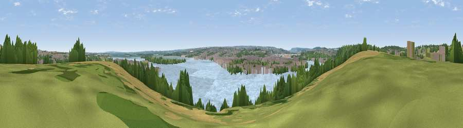

Viewpoint near Lower Upnor
#38213 in England · top 50% of its area beats it · near Lower Upnor · access?Where it is
The exact computed spot (TQ 77325 71425). Click the marker for map links.
Public access: no public right of way or access land is recorded at this exact spot — it may be on private land. Computed from Natural England's CRoW access layer and OpenStreetMap rights of way — not the legal definitive map. Always verify locally.
The view, rendered

A 360° render of this exact spot computed from the terrain model, tree cover and land cover — summer colours, afternoon light, calibrated against photographs of famous viewpoints. Real trees, hedges and buildings will differ in detail.
The panorama
Grey silhouette: terrain skyline in each direction (720 bearings, Earth curvature and refraction included). Dashed green: skyline with trees (+15 m) and buildings (+8 m) as obstacles. Blue strip: how far the ground is visible on each bearing.
Where the view opens
Wedge length = distance to the farthest visible ground on that bearing (vegetation-aware). Rings at 10, 25 and 50 km.
What fills the view
48% water · 20% built-up · 14% woodland · 9% grassland · 9% cropland
Angular shares of the visible panorama (visual magnitude), not map area. Landscape diversity 0.61 (0–1 Shannon).
Key numbers
More beautiful places nearby
The staircase of upgrades: each row has a higher view potential than everything closer. Driving times are estimates from straight-line distance, calibrated against real road routing — check an actual route before setting out.
| Place | Direction | Drive | Score |
|---|---|---|---|
| Viewpoint near Lower Upnor | WNW · 1 km | ~2 min | 32.2 |
| Viewpoint near Cliffe Woods | WNW · 4 km | ~8 min | 45.7 |
| Viewpoint near Shorne | W · 8 km | ~16 min | 52.8 |
| Viewpoint near Bluebell Hill | SSW · 11 km | ~20 min | 54.6 |
| Viewpoint near Bluebell Hill | S · 11 km | ~21 min | 60.9 |
| Viewpoint near Detling | S · 12 km | ~23 min | 62.5 |
| Viewpoint near Thurnham | SSE · 14 km | ~25 min | 63.2 |
| Viewpoint near Birling | SW · 14 km | ~25 min | 65.1 |
51.41411, 0.54858 · source: screening · position refined by local search. Computed location — check access rights before visiting.